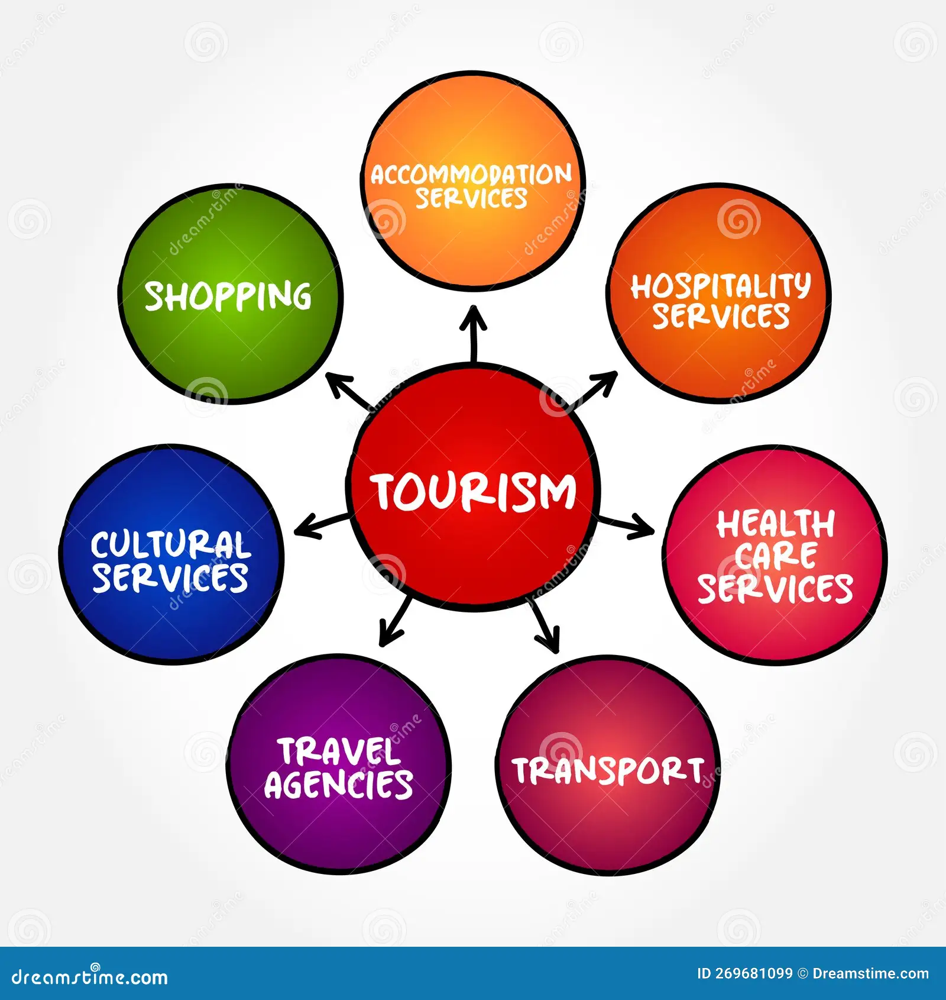
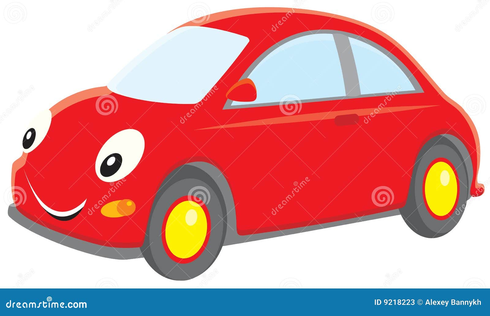

DEFINITION OF TRAVEL AGENCY |
 |
A travel agency is a business that offers and sells travel deals to its customers. It acts as a mediator between consumers and the various service providers present on the tourism market: tour operators, airlines, hoteliers, Car Rental Companies, travel insurance, etc. Travel agencies, by virtue of their proximity to the customer, also have an advisory role. They notify consumers about the formalities that need to be completed before they travel abroad or stay abroad, advise and make a personal offer in accordance with the customer’s expectations and preferences. Let’s look at the services that travel agencies provide to make our journey stress-free.
TYPES OF SERVICES OFFERED BY TRAVEL AGENCIES |
 |
HOUSING |
TRANSPORT |
 |
Food |
 |
|---|
TOURIST ROUTES |

|
CRUISE SERVICE |
WHAT ROLE DOES A TRAVEL AGENCY PLAY?
Acting as a mediator between travelers and travel creators, the travel agency provides unmatched service for the smooth running of your stay in your own country or abroad.It responds to tourist demand and targets the most popular destinations and the most remote destinations. It takes care of many areas, including ticket sales and reservation, routing, and hotel reservations. The travel agency helps to facilitate the organization of the trip both nationally and internationally. It guarantees the progress of the trip for tourists so that they can find comfort and total satisfaction. A travel agency is a commercial enterprise that a tangible or legal person can manage.
It performs services for tourists, for individual or group stays. Moreover, travel agencies welcome and advise private or professional tourists. It has the ability to offer various services and must meet customer expectations. By definition, the agency sells travel offers to tourists, professionals, individuals, and consumers. It must warn and inform customers in the event of a flight cancellation or the event of a major problem relating to the reservation of the ticket and accommodation.
These agencies also make itineraries for the tour packages they offer. That is primarily used to identify the starting point, destination, and shopping place for a tour. This configuration contains many elements designed after good market analysis.
The travel agency also informs the formalities to be completed before travel. It also offers tailor-made or personalized offers according to customer expectations. Overall, the travel agency sells products from tour operators. Nevertheless, it has the capacity to organize the stays of the tourists and the entire organization of the trip going to the booking of the flight, the movement of the clients, the car rental, the hotel reservation, and the travel.
They provide clients with additional services such as travel insurance. This insurance protects you in case of injury or loss of luggage while traveling. This is usually related to problems or situations that you may encounter while traveling. Travel agencies also issue government currency exchange permits.
Thus the activities of the travel agency are variable and multiple. Tourists all over the world can take advantage of the benefits offered by the travel agency. They can expect from the travel agency a turnkey stay where all the organization of the trip will be taken care of by the travel agency.
Nowadays, travel agencies play an essential role in travel and tourism. On average, more than 60% of travel agency revenue comes from business travel. They offer both commercial and recreational activities, and everything is online. That’s why they offer online booking. You don’t have to go out, just stay home, visit their sites and make a booking. These agencies are striving to build good relationships with customers.
If you’re planning a tour with your family or friends and need car rental services, Carlay Car Rental is your right partner. We’re providing our services all our Pakistan, especially in Lahore, Karachi, and Islamabad.
TRAVEL AGENCY – LEADING BRAND FOR TICKETS & VISSAS ONLINE BUYING
Abaya PK is a well-reputed Islamic wear brand, offering a wide variety of best quality Abayas, scarfs, hijabs, and accessories. We are here to ease the online shopping of Islamic women's wear to empower Pakistani women. We aim to provide a one-stop-shop for all types of abaya and hijabs online. So, if you are looking for the best abaya shop, then you are at the right place.
| SIGN UP AND SAVE | Contact us | Main Menu | Customer Reviews |
| Subscribe to get special offers, free giveaways,and once-in-a-lifetime deals. |
Travel agency has a dedicated customer service team.
We are available at your service regarding your orders and queries. We are connected to you with WhatsApp, E-mail and social media platforms. |
Eid TRAVEL | About us |
| TICKETS Booking Form | Contact Us | ||
| BOOKING | Privacy Policy | ||
| VOUCHERS | Terms &condition | ||
| PURCHASE | Term Of Service |